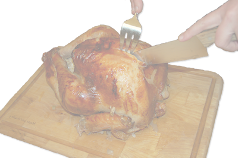

Grilled Turkey
Take your turkey outside this year and let your grill do the cooking. Grilled turkey is deliciously crisp with a tangy smoked flavor. Properly treated, turkey on the grill doesn't take any longer than turkey cooked in an oven.
Ingredients
- 1 turkey, 12 to 14 lbs.
- 8-10 garlic cloves
- 2 cups lightly packed Italian parsley leaves
- 1 Tbsp. kosher salt
- 2 tsp. freshly ground black pepper
- 2 tsp. chili powder
- 2 oranges
- 1 stick unsalted butter
- 2-4 cups reduced-sodium chicken stock
- 1 large onion
- 1 large carrot
Instructions
- Remove neck and giblets from turkey cavity. Rinse turkey under cold water and pat dry with paper towels.
- Finely chop garlic and parsley and place in a small bowl. Add salt, pepper, and chili powder. Add grated orange zest.
- Mix in softened butter until all ingredients in the bowl are evenly distributed.
- Starting from neck-end of turkey, carefully separate skin from the breast meat. Push about half of butter mixture onto breast meat under skin and spread it out evenly.
- Cover top and sides of turkey with remaining butter mixture. Season turkey with salt and pepper.
- Quarter oranges and place sections in the turkey cavity. Use a trussing clamp to turn wings back, holding neck skin in place. Tie together with a cotton string.
- Put 2 cups of chicken stock, onion, and carrot inside a heavy-duty roasting pan. Place turkey, breast side up, on a roasting rack, and set rack inside pan. Cook the turkey over indirect medium heat to an internal temperature of 350°.
- Grill turkey for two to three hours, checking every half hour to verify that the roasting pan has not dried out. If pan looks dry, moisten it with the remaining chicken stock.
- Turkey is done when the internal temperature in the thighs is 180° and the internal temperature of the breast is 170°.
- Transfer to a cutting board and let sit for 20 to 30 minutes before carving.
- Use drippings as a base for a turkey gravy.
Serves 10 to 12.